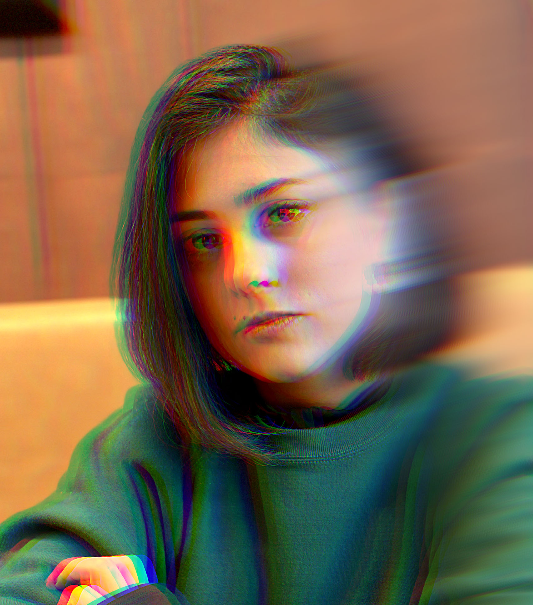

Artistic Work
Exploring creativity through theatre, visual arts, and cultural design
The Intersection of Art and Design
My journey in the creative world extends beyond UX/UI design into various artistic endeavors. My experience with the Shahrzad Theatre Complex and interest in cultural arts have shaped my understanding of visual storytelling, audience engagement, and the power of creative expression.
🎭 Theatre & Performance Design
Working with Iran's largest private theatre complex, I gained invaluable experience in designing for cultural events and live performances. This work taught me about:
- Creating immersive experiences that engage diverse audiences
- Understanding the emotional journey of spectators
- Balancing tradition with modern design sensibilities
- Designing for real-world, high-pressure environments
🎨 Visual & Graphic Design
Beyond digital interfaces, I create visual content for various purposes:
- Brand Identity: Developing cohesive visual languages for organizations
- Print Design: Posters, brochures, and marketing materials
- Illustration: Custom illustrations for web and print
- Typography: Exploring letterforms and typographic compositions
🌍 Cultural Design Projects
My Persian heritage and cross-cultural experience inform my artistic work. I'm passionate about:
- Bridging Eastern and Western design aesthetics
- Preserving cultural motifs in contemporary design
- Creating inclusive visual languages that resonate across cultures
- Exploring Persian calligraphy and geometric patterns
📸 Photography & Visual Storytelling
Photography is another medium through which I explore composition, light, and narrative. This practice enhances my UI design work by improving my understanding of visual hierarchy, contrast, and emotional impact.
🎬 Motion & Video
I'm expanding my skills in motion design and video editing, exploring how movement and timing can enhance digital experiences. This includes:
- Microinteractions and UI animations
- Explainer videos and motion graphics
- Video editing for presentations and case studies
- Understanding the principles of motion and timing
Artistic Philosophy
I believe that great design exists at the intersection of art and function. While UX design solves problems, artistic work explores possibilities. Both disciplines inform each other:
- Art teaches freedom: Breaking rules and exploring unconventional solutions
- Design teaches discipline: Working within constraints and user needs
- Together they create impact: Beautiful, functional, meaningful experiences
How Artistic Work Enhances My Design
- Visual sensitivity: Refined eye for aesthetics, composition, and detail
- Storytelling skills: Ability to craft compelling narratives through design
- Cultural awareness: Deep appreciation for diverse visual languages
- Emotional intelligence: Understanding how visuals evoke feelings and responses
- Creative confidence: Willingness to experiment and push boundaries
Portfolio Gallery
A collection of my artistic work across various mediums

Theatre & performance design
Visual & graphic design
Cultural design projects
Photography & storytelling
Motion & video work
Illustration & typography
Brand identity
Print & editorial
Persian calligraphy & patterns